Clustering
Hierarchical clustering et Kmeans
Anne Badel, Frédéric Guyon & Jacques van Helden
2020-05-31
Questions abordées dans ce cours
- Comment sont représentées les données dans l’ordinateur ?
- Comment représenter les données dans l’espace ?
Comment découvrir des “clusters” dans les données ?
- classification hiérarchique
- kmeans
- Comment déterminer le nombre de groupe optimal ?
Comment comparer deux classifications ?
Les données dans l’ordinateur (1)
Les iris de Fisher
Ces données sont un classique des méthodes d’apprentissage Fisher

Les données dans l’ordinateur (2)
Sepal.Length Sepal.Width Petal.Length Petal.Width
1 5.1 3.5 1.4 0.2
2 4.9 3.0 1.4 0.2
3 4.7 3.2 1.3 0.2
4 4.6 3.1 1.5 0.2
5 5.0 3.6 1.4 0.2
6 5.4 3.9 1.7 0.4
Les données dans l’ordinateur (2)
Sepal.Length Sepal.Width Petal.Length Petal.Width
1 5.1 3.5 1.4 0.2
2 4.9 3.0 1.4 0.2
3 4.7 3.2 1.3 0.2
4 4.6 3.1 1.5 0.2
5 5.0 3.6 1.4 0.2
6 5.4 3.9 1.7 0.4
1 ligne = 1 fleur = 1 individu = 1 vecteur
1 colonne = 1 variable = 1 feature = 1 vecteur
l’ensemble des données = 1 échantillon = 1 data.frame
! : convention différente en RNA-seq
Représentons ces données : une fleur (1)
Sepal.Length Sepal.Width Petal.Length Petal.Width
1 5.1 3.5 1.4 0.2

Comment représenter cette fleur ?
Dans quel espace de réprésentation ?
Représentons ces données : une fleur (2)
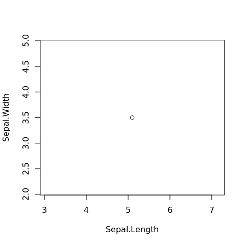
Dans le plan, un point de coordonnées : \(x = 5.1\), \(y = 3.5\)
représenté par un vecteur \(v2 = (5.1, 3.5)\) dans \(\mathbb{R}^2\)
Représentons ces données : une fleur (3)
Dans l’espace, un point de coordonnées :
- \(x = 5.1\)
- \(y = 3.5\)
- \(z = 1.4\)

représenté par un vecteur \(v3 = (\) 5.1 \(,\) 3.5 \(,\) 1.4\()\) dans \(\mathbb{R}^3\)
Représentons ces données : toutes les fleurs (4)
= un nuage de points dans un espace à 4 dimensions
- chaque point est représenté par un vecteur dans \(\mathbb{R}^4\)
- le nuage de points est représenté par une matrice à n et p (= 4 dimensions)
- n = nombre de lignes = nombre d’individus = taille de l’échantillon
- p = nombre de colonnes = nombre de variables décrivant l’échantillon
= PAS de représentation possible (pour l’instant)
Représentons ces données : une variable à la fois (1)
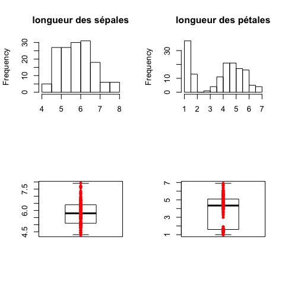
Représentons ces données : deux variables à la fois (2)

Il faut tenir compte de toutes les dimensions
c’est à dire de toutes les variables à notre disposition
Clustering et classification (termes anglais)
On a une information sur nos données
- variables quantitatives = vecteur de réels
Clustering : on cherche à mettre en évidence des groupes dans les données
- le clustering appartient aux méthodes dites non supervisées, ou descriptives
Clustering et classification (termes anglais)
On a une information sur nos données
Clustering : on cherche à mettre en évidence des groupes dans les données
Classification :
on connaît le partitionnement de notre jeu de données
- variables quantitatives = vecteur de réels
- ET
- variable qualitative = groupe (cluster) d’appartenance = vecteurs de entiers / niveau d’un facteur
- on cherche à prédire le groupe (la classe) de nouvelles données
la classification appartient aux méthodes dites supervisées, ou prédictives
Géométrie et distances (1)
On considère les données comme des points de \(\mathbb{R}^n\)

\(\mathbb{R}^n\) : espace Euclidien à \(n\) dimensions, où
- chaque dimension représente une des variables observées;
- un individu est décrit comme un vecteur à \(n\) valeurs, qui correspond à un point dans cet espace.
Géométrie et distances (2)
On considère les données comme des points de \(R^n\) (*)
- géométrie donnée par distances
- distances = dissimilarités imposées par le problème
- dissimilarités \(\longrightarrow\) permettent visualisation de l’ensemble des points

Géométrie et distances (3)
Sur la base d’une distance (souvent euclidienne)
Clustering :
- Méthode agglomérative ou hierarchical clustering
- Moyennes mobiles ou K-means : séparation optimale des groupes connaissant le nombre de groupes
Distances
Définition d’une distance : fonction positive de deux variables
- \(d(x,y) \ge 0\)
- \(d(x,y) = d(y,x)\)
- \(d(x,y) = 0 \Longleftrightarrow x = y\)
- Inégalité triangulaire : \(d(x,z) \le\) d(x,y)+d(y,z)
Si 1,2,3 : dissimilarité
Distance euclidienne
- distance euclidienne ou distance \(L_2\): \(d(x,y)=\sqrt{\sum_i (x_i-y_i)^2}\)
Représentation des vecteurs-individus
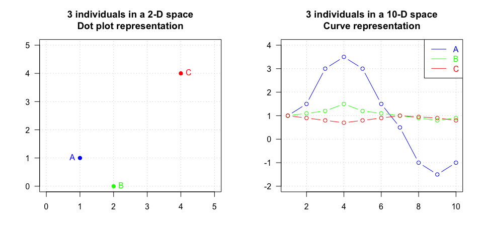
Distance euclidienne et distance de corrélation
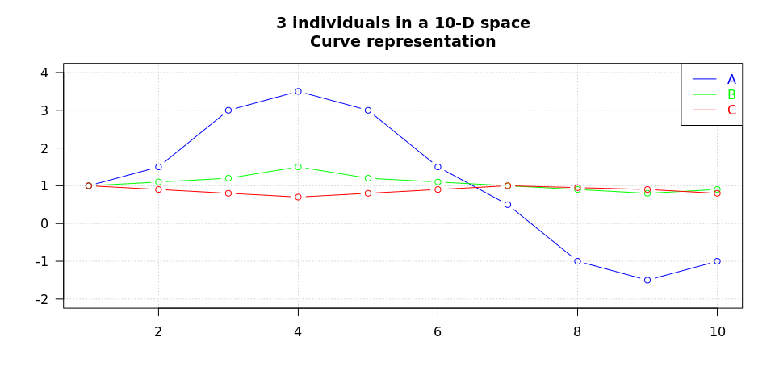
## Plot distance between curves in a time series
vect.A <- c(1, 1.5, 3, 3.5, 3, 1.5, 0.5, -1, -1.5, -1)
vect.B <- c(1, 1.1, 1.2, 1.5, 1.2, 1.1, 1, 0.9, 0.8, 0.9)
vect.C <- c(1, 0.9, 0.8, 0.7, 0.8, 0.9, 1, 0.95, 0.9, 0.8)
plot(0:10, type = "n", xlim = c(1, 10), ylim = c(-2, 4),
main = "3 individuals in a 10-D space\nCurve representation",
xlab = "", ylab = "", las = 1, panel.first = grid())
lines(vect.A, type = "b", col = "blue")
lines(vect.B, type = "b", col = "green")
lines(vect.C, type = "b", col = "red")
legend("topright", legend = c("A", "B", "C"),
col = c("blue", "green", "red"), lty = 1,
text.col = c("blue", "green", "red"))

<table>
<thead>
<tr>
<th style="text-align:left;"> </th>
<th style="text-align:center;"> distance euclidienne </th>
<th style="text-align:center;"> coefficient de corrélation </th>
<th style="text-align:center;"> distance de corrélation </th>
</tr>
</thead>
<tbody>
<tr>
<td style="text-align:left;"> A - B </td>
<td style="text-align:center;"> 4.85 </td>
<td style="text-align:center;"> 0.93 </td>
<td style="text-align:center;"> 0.07 </td>
</tr>
<tr>
<td style="text-align:left;"> A - C </td>
<td style="text-align:center;"> 5.59 </td>
<td style="text-align:center;"> -0.53 </td>
<td style="text-align:center;"> 1.53 </td>
</tr>
<tr>
<td style="text-align:left;"> B - C </td>
<td style="text-align:center;"> 1.03 </td>
<td style="text-align:center;"> -0.67 </td>
<td style="text-align:center;"> 1.67 </td>
</tr>
</tbody>
</table>
# Avec R (1) : distance entre deux individus
- on utilise la fonction `dist()` avec l'option `method = "euclidean", "manhattan", ...`
<table>
<tbody>
<tr>
<td style="text-align:right;"> 2.39 </td>
<td style="text-align:right;"> 4.05 </td>
<td style="text-align:right;"> 4.16 </td>
<td style="text-align:right;"> 2.51 </td>
<td style="text-align:right;"> 1.32 </td>
</tr>
<tr>
<td style="text-align:right;"> 3.13 </td>
<td style="text-align:right;"> 3.33 </td>
<td style="text-align:right;"> 2.10 </td>
<td style="text-align:right;"> 2.49 </td>
<td style="text-align:right;"> 3.12 </td>
</tr>
</tbody>
</table>
distance euclidienne : 4.33
distance de manhattan = 10.46
# Avec R (2) : distance entre individus d'un nuage de points
- distance euclidienne
114 23 17 47
23 4.65
17 4.28 0.93
47 4.10 0.81 0.48
63 1.48 3.68 3.30 3.13
- distance de corrélation : $d = 1-r$
114 23 17 47
23 0.5710
17 0.5224 0.0026
47 0.4741 0.0071 0.0055
63 0.0333 0.3632 0.3193 0.2859
# Avec R (3) : distance entre variables décrivant le nuage de points
Sepal.Length Sepal.Width Petal.Length
Sepal.Width 1.765
Petal.Length 0.196 1.919
Petal.Width 0.318 1.792 0.052 ```
Distances entre groupes (1)
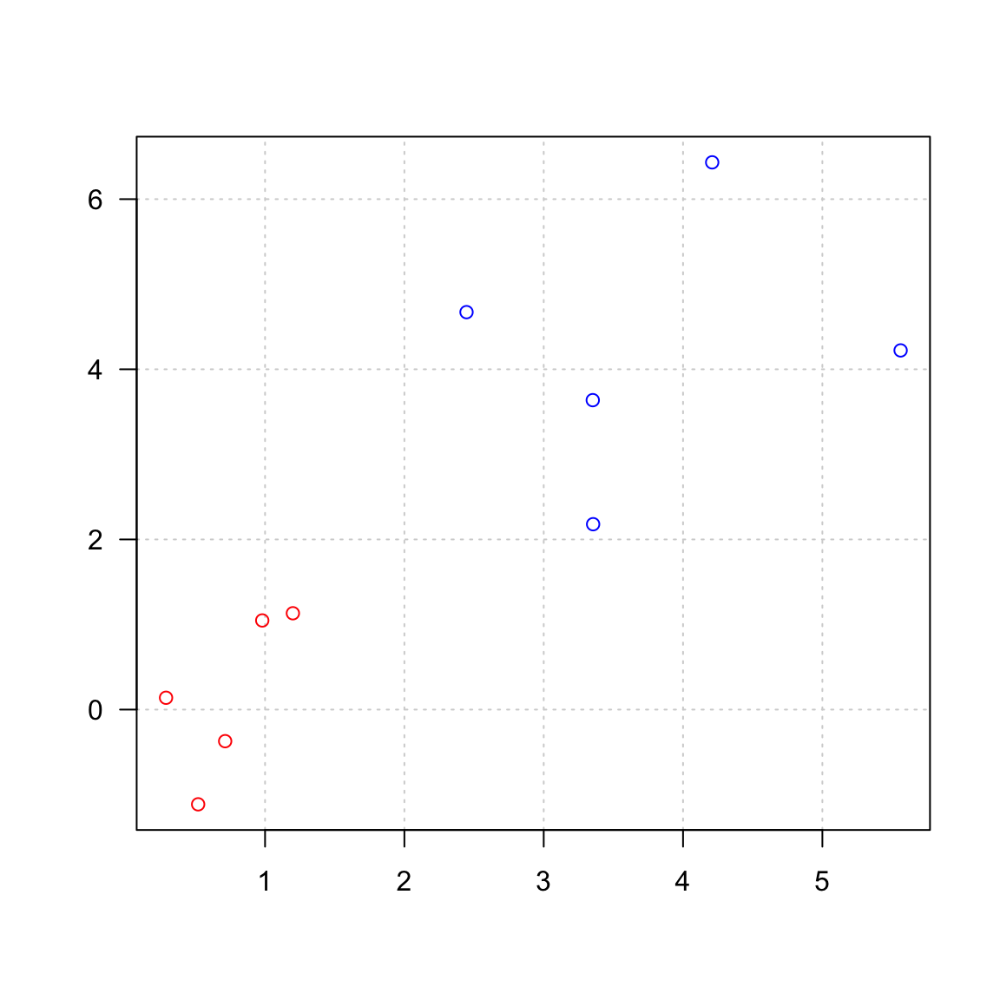
Distances entre groupes (2)
- Single linkage : élements les plus proches des 2 groupes
\[D(C_1,C_2) = \min_{i \in C_1, j \in C_2} D(x_i, x_j)\]
- Complete linkage : éléments les plus éloignés des 2 groupes
\[D(C_1,C_2) = \max_{i \in C_1, j \in C_2} D(x_i, x_j)\]
- Average linkage : distance moyenne
\[D(C_1,C_2) = \frac{1}{N_1 N_2} \sum_{i \in C_1, j \in C_2} D(x_i, x_j)\]
\(d^2(C_i,C_j) = I_{intra}(C_i \cup C_j)-I_{intra}(C_i)-I_{intra}(C_j)\)
\(D(C_1,C_2) = \sqrt{\frac{N_1N_2}{N_1 + N_2}} \| m_1 -m_2 \|\)
Distances entre groupes (4)

Les données
Revenons à nos iris de Fisher
Visualisation des données
On peut ensuite essayer de visualiser les données
- par un
plot (! ne pas faire si “grosses” données)

Préparation des données (1) : variables de variance nulle
|
|
Variance
|
|
Sepal.Length
|
0.686
|
|
Sepal.Width
|
0.190
|
|
Petal.Length
|
3.116
|
|
Petal.Width
|
0.581
|
[1] 0
Préparation des données (2) : “Normalisation”
Afin de pouvoir considérer que toutes les variables sont à la même échelle, il est parfois nécessaire de standardiser les données.
soit
- en centrant (ramener la moyenne de chaque variable à \(0\))
soit
- en centrant (ramener la moyenne de chaque variable \(0\))
- et mettant à l’échelle (ramener la variance de chaque variable à \(1\))
- soit en effectuant une transformation des variables, par exemple transformation logarithmique
On peut visuellement regarder l’effet de la standardisation
- par des boîtes à moustaches (boxplot)
Centrage sur la moyenne ou la médiane
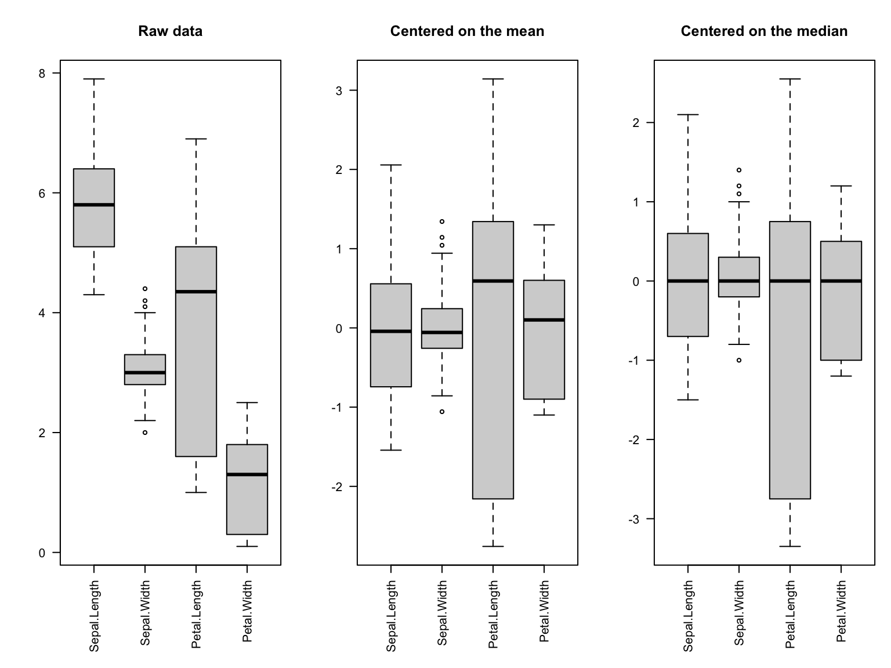
Mise à l’échelle écart-type ou intervalle interquartile
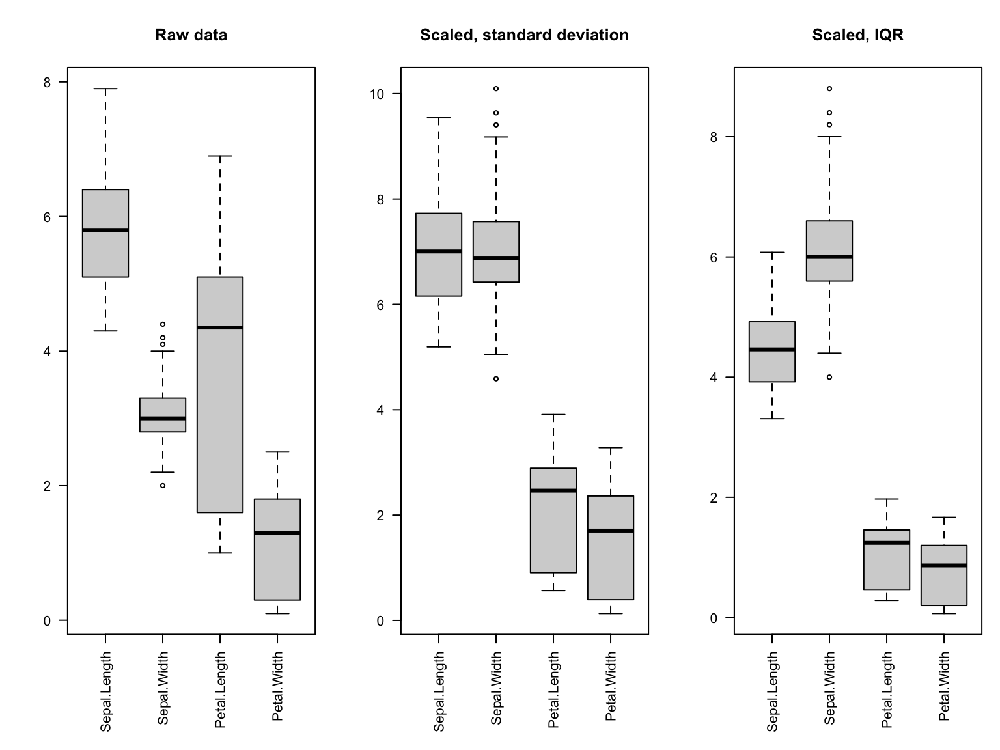
Standardisation : centrage et mise à l’échelle
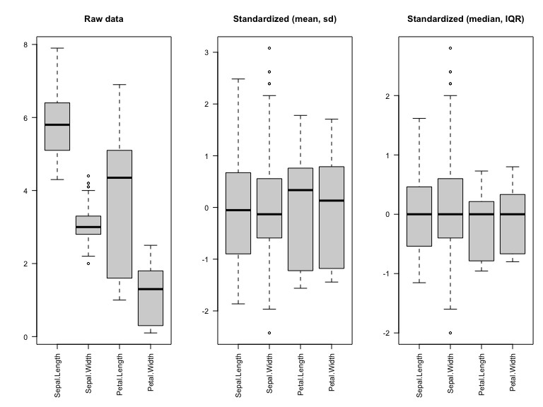
La matrice de distance euclidienne
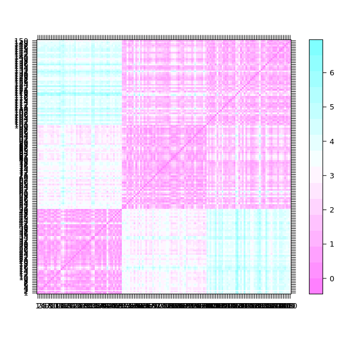
La matrice de distance de corrélation
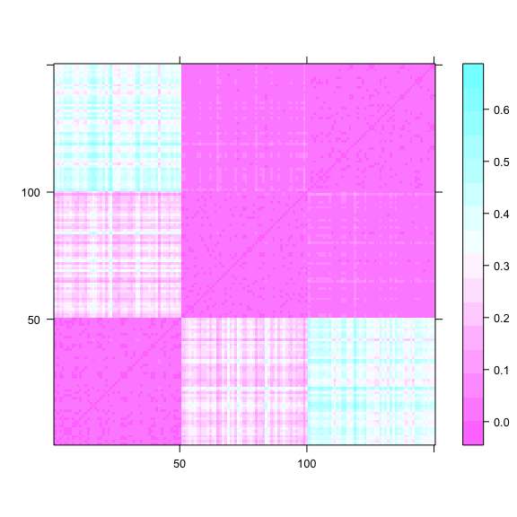
La classification hiérarchique : principe
classification hiérarchique : mettre en évidence des liens hiérachiques entre les individus
- classification hiérarchique ascendante : partir des individus pour arriver à des classes / cluster
- classification hiérarchique descendante : partir d’un groupe qu’on subdivise en sous-groupes /clusters jusqu’à arriver à des individus.
Notion importante, cf distances
au départ

identification des individus les plus proches

construction du dendrogramme

calcul des nouveaux représentants ‘BE’ et ‘CD’

calcul des distances de l’individu restant ‘A’ aux points moyens

A est plus proche de …

dendrogramme

pour finir

- à l’étape \((n-1)\), tous les individus sont regroupés dans un même cluster
dendrogramme final

Je ne fais pas attention à ce que je fais …
… c’est à dire aux options des fonctions dist() et hclust()


En utilisant une autre métrique

En utilisant un autre critère d’aggrégation

Les heatmap
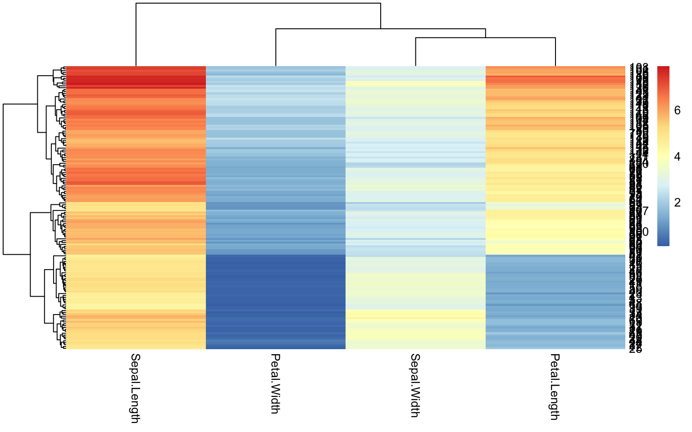
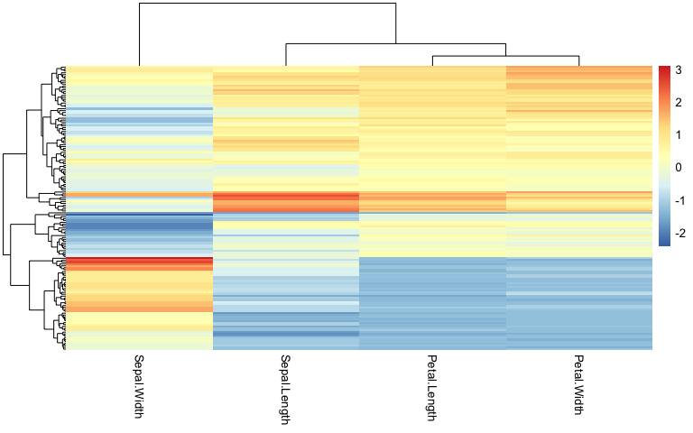
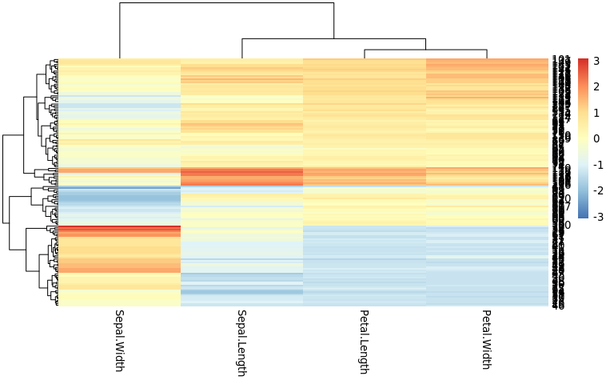
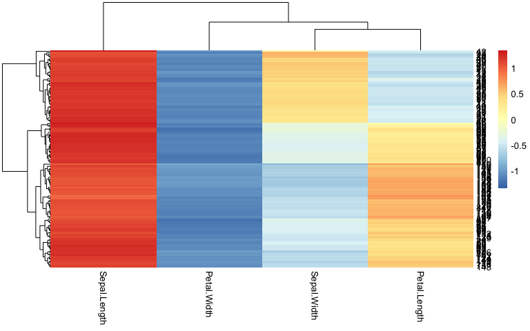
Les k-means
Les individus dans le plan

=> faire apparaitres des classes / des clusters
L’algorithme
étape 1 :
- \(k\) centres provisoires tirés au hasard
- \(k\) clusters créés à partir des centres en regroupant les individus les plus proches de chaque centre
- obtention de la partition \(P_0\)
Choix des centres provisoires

Calcul des distances aux centres provisoires

Affectation à un cluster

Calcul des nouveaux centres de classes
Etape j :
construction des centres de gravité des k clusters construits à l’étape \((j-1)\)
\(k\) nouveaux clusters créés à partir des nouveaux centres suivant la même règle qu’à l’étape \(0\)
obtention de la partition \(P_j\)

Fin :
- l’algorithme converge vers une partition stable
Arrêt :
- lorsque la partition reste la même, ou lorsque la variance intra-cluster ne décroit plus, ou lorsque le nombre maximal d’itérations est atteint.

Un premier k-means en 5 groupes
K-means clustering with 5 clusters of sizes 28, 21, 22, 50, 29
Cluster means:
Sepal.Length Sepal.Width Petal.Length Petal.Width
1 -0.7467198 1.4252951 -1.2932659 -1.2173430935
2 -0.3628650 -1.4097814 0.1074147 0.0008746178
3 -1.3477916 0.1187465 -1.3100027 -1.2931622378
4 0.3558492 -0.3930869 0.5846038 0.5466361525
5 1.3926646 0.2323817 1.1567451 1.2132759051
Clustering vector:
[1] 1 3 3 3 1 1 3 1 3 3 1 3 3 3 1 1 1 1 1 1 1 1 1 3 3 3 1 1 1 3 3 1 1 1 3 3 1 1 3 1 1 3 3 1 1 3 1 3 1 3 5 4 5 2 4 4 4 2 4 2 2 4 2 4 4 4 4 2 2 2 4 4 4 4 4 4 4 4 4 2 2 2 2 4 4 4 4 2 4 2 2 4 2 2 2 4 4 4 2 4 5 4 5 4 5 5 2 5 4 5 5 4 5 4 4 5 4 5 5 2 5 4 5 4 5 5 4 4 4 5 5 5 4 4 4 5 5 4 4 5 5 5 4 5 5 5 4
[148] 4 5 4
Within cluster sum of squares by cluster:
[1] 13.761588 11.951942 8.032603 29.590390 26.891293
(between_SS / total_SS = 84.9 %)
Available components:
[1] "cluster" "centers" "totss" "withinss" "tot.withinss" "betweenss" "size" "iter" "ifault"

Comparaison des résultats des deux clustering
|
0
|
0
|
29
|
|
16
|
0
|
4
|
|
5
|
25
|
0
|
|
0
|
45
|
0
|
|
0
|
26
|
0
|
Pros et cons des différents algorithmes
| Hiérarchique |
L’arbre reflète la nature imbriquée de tous les sous-clusters |
Complexité quadratique (mémoire et temps de calcul) \(\rightarrow\) quadruple chaque fois qu’on double le nombre d’individus |
|
Permet une visualisation couplée dendrogramme (groupes) + heatmap (profils individuels) |
|
|
Choix a posteriori du nombre de clusters |
|
| K-means |
Rapide (linéaire en temps), peut traiter des jeux de données énormes (centaines de milliers de pics ChIP-seq) |
Positions initiales des centres est aléatoire \(\rightarrow\) résultats changent d’une exécution à l’autre |
|
|
Distance euclidienne (pas appropriée pour transcriptome par exemple) |
Visualisation des données - coloration par espèces

Supplementary materials
POUR ALLER PLUS LOIN
Distances utilisées dans R (1)
distance euclidienne ou distance \(L_2\): \(d(x,y)=\sqrt{\sum_i (x_i-y_i)^2}\)
distance de manahattan ou distance \(L_1\): \(d(x,y)=\sum_i |x_i-y_i|\)
distance du maximum ou L-infinis, \(L_\infty\): \(d(x,y)=\max_i |x_i-y_i|\)

Distances utilisées dans R (2)
distance de Minkowski \(l_p\): \[d(x,y)=\sqrt[p]{\sum_i (|x_i-y_i|^p}\]
distance de Canberra (x et y valeurs positives): \[d(x,y)=\sum_i \frac{x_i-y_i}{x_i+y_i}\]
distance binaire ou distance de Jaccard ou Tanimoto: proportion de propriétés communes
Note : lors du TP, sur les données d’expression RNA-seq, nous utiliserons le coefficient de corrélation de Spearman et la distance dérivée, \(d_c = 1-r\)
Distances plus classiques en génomique
Il existe d’autres mesures de distances, plus ou moins adaptées à chaque problématique :
Ne sont pas des distances, mais indices de dissimilarité :
v.a v.b
v.b 0.3333333
v.c 0.0000000 0.3333333
Comparaison de clustering: Rand Index
Mesure de similarité entre deux clustering
à partir du nombre de fois que les classifications sont d’accord
\[R=\frac{m+s}{t}\]
- m=nombre de paires dans la même classe dans les deux classifications
- s=nombre de paires séparées dans les deux classifications
- t=nombre de paires totales
Comparaison de clustering: Adjusted Rand Index
\[ ARI=\frac{RI-Expected RI}{Max RI -Expected RI}\]
- ARI=RI normalisé
- Prend en compte la taille des classes
- ARI=1 pour classification identique
- ARI \(\simeq\) 0 pour classification aléatoire (peut être <0)
- Adapté pour nombre de classe différent entre les deux classifications et taille de classe différente
Comparaison de clustering: Rand Index
Mesure de similarité entre deux clustering
à partir du nombre de fois que les classifications sont d’accord
\[R=\frac{m+s}{t}\]
- m = nombre de paires dans la même classe dans les deux classifications
- s = nombre de paires séparées dans les deux classifications
- t = nombre de paires totales
Comparaison de clustering: Adjusted Rand Index
\[ ARI=\frac{RI-Expected RI}{Max RI -Expected RI}\]
- ARI=RI normalisé
- Prend en compte la taille des classes
- ARI=1 pour classification identique
- ARI \(\simeq\) 0 pour classification aléatoire (peut être <0)
- Adapté pour nombre de classe différent entre les deux classifications et taille de classe différente
Comparaison des résultats des deux classifications
- rand index et adjusted rand index
Rand HA MA FM Jaccard
0.7020134 0.3855580 0.3924977 0.6118291 0.3931110
R version 3.6.3 (2020-02-29)
Platform: x86_64-conda_cos6-linux-gnu (64-bit)
Running under: CentOS Linux 7 (Core)
Matrix products: default
BLAS/LAPACK: /shared/mfs/data/software/miniconda/envs/r-3.6.3/lib/libopenblasp-r0.3.9.so
locale:
[1] LC_CTYPE=en_US.UTF-8 LC_NUMERIC=C LC_TIME=en_US.UTF-8 LC_COLLATE=en_US.UTF-8 LC_MONETARY=en_US.UTF-8 LC_MESSAGES=en_US.UTF-8 LC_PAPER=en_US.UTF-8 LC_NAME=C LC_ADDRESS=C LC_TELEPHONE=C
[11] LC_MEASUREMENT=en_US.UTF-8 LC_IDENTIFICATION=C
attached base packages:
[1] stats graphics grDevices utils datasets methods base
other attached packages:
[1] pheatmap_1.0.12 vegan_2.5-6 lattice_0.20-41 permute_0.9-5 rgl_0.100.54 RColorBrewer_1.1-2 clues_0.6.2.2 FactoMineR_2.3 kableExtra_1.1.0 knitr_1.28
loaded via a namespace (and not attached):
[1] ggrepel_0.8.2 Rcpp_1.0.4.6 assertthat_0.2.1 digest_0.6.25 mime_0.9 R6_2.4.1 evaluate_0.14 highr_0.8 httr_1.4.1 ggplot2_3.3.1 pillar_1.4.4 rlang_0.4.6
[13] rstudioapi_0.11 miniUI_0.1.1.1 Matrix_1.2-18 rmarkdown_2.1 splines_3.6.3 webshot_0.5.2 readr_1.3.1 stringr_1.4.0 htmlwidgets_1.5.1 munsell_0.5.0 shiny_1.4.0.2 compiler_3.6.3
[25] httpuv_1.5.2 xfun_0.14 pkgconfig_2.0.3 mgcv_1.8-31 htmltools_0.4.0 flashClust_1.01-2 tidyselect_1.1.0 tibble_3.0.1 viridisLite_0.3.0 crayon_1.3.4 dplyr_0.8.5 later_1.0.0
[37] MASS_7.3-51.6 leaps_3.1 grid_3.6.3 nlme_3.1-147 jsonlite_1.6.1 xtable_1.8-4 gtable_0.3.0 lifecycle_0.2.0 magrittr_1.5 scales_1.1.1 stringi_1.4.6 promises_1.1.0
[49] scatterplot3d_0.3-41 xml2_1.3.2 ellipsis_0.3.1 vctrs_0.3.0 tools_3.6.3 manipulateWidget_0.10.1 glue_1.4.1 purrr_0.3.4 hms_0.5.3 crosstalk_1.1.0.1 parallel_3.6.3 fastmap_1.0.1
[61] yaml_2.2.1 colorspace_1.4-1 cluster_2.1.0 rvest_0.3.5
… par une projection sur une ACP

Cas d’étude : TCGA Breast Invasive Cancer (BIC)
- Présentation du cas d’étude (Jacques van Helden A COMPLETER)
TP : analyse de données d’expression

Comment déterminer le nombre de clusters ? (1)
Ces méthodes non supervisées, sont sans a priori sur la structure, le nombre de groupe, des données.
rappel : un cluster est composé